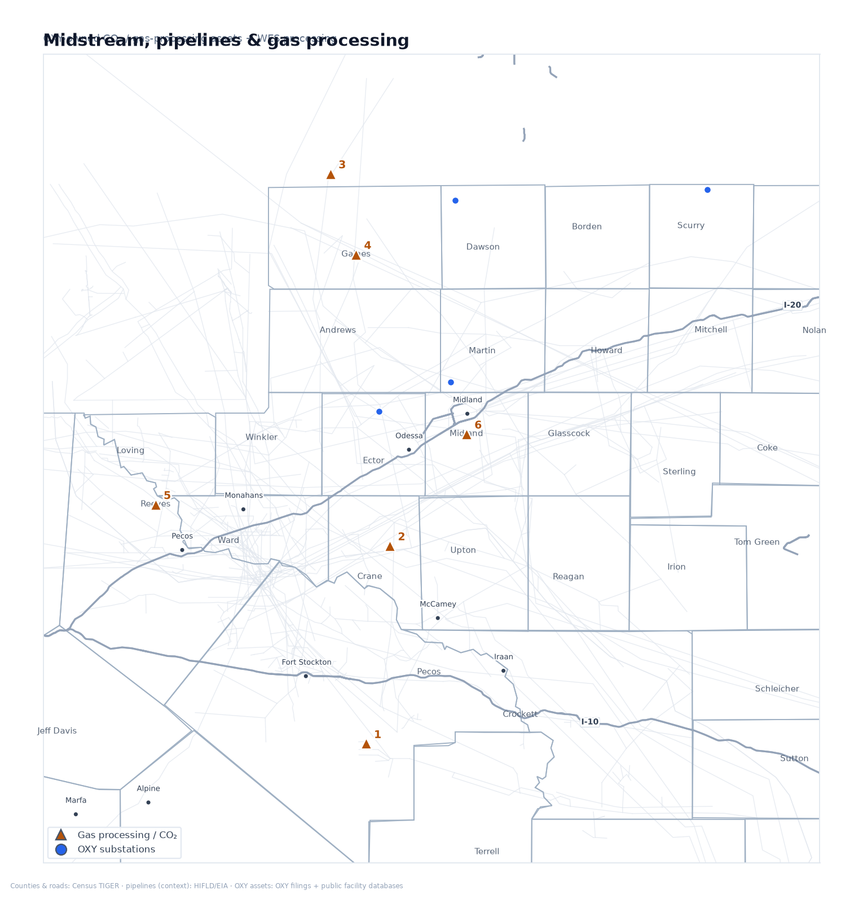
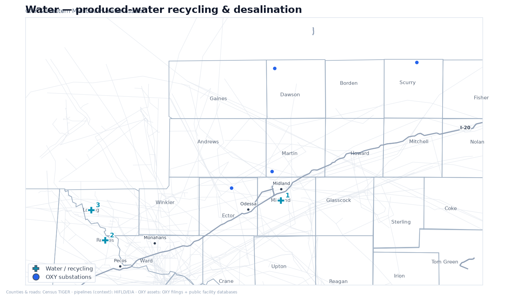
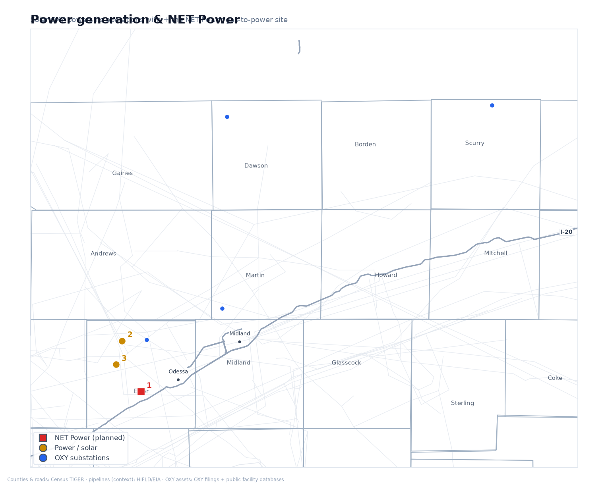
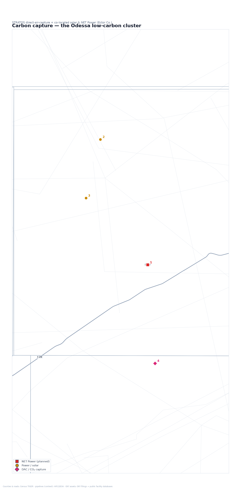

Confidential · Subject-Company Intelligence
Occidental Petroleum
OXY — infrastructure for a
hyperscale data-center JV
An assessment of Occidental's power, water, gas/CO₂ and carbon-capture infrastructure across West Texas and the Permian Basin — framed for a potential joint venture with the Williams family to co-develop a hyperscale data-center campus near Caramba North, Pecos County.
Prepared June 2026
Subject company: Occidental Petroleum Corp. (NYSE: OXY)
Audience: data-center JV evaluation
Sources: SEC filings & earnings calls · OXY / WES / 1PointFive / NET Power releases · DOE / EPA / EIA / RRC / TCEQ · trade press — see Appendix D
Executive summaryOccidental as a data-center JV partner
Occidental Petroleum is the Permian Basin's largest carbon-dioxide and enhanced-oil-recovery operator, and over the last five years it has quietly assembled the three ingredients a hyperscale data center needs most: dispatchable power, large-scale water handling, and carbon management. Its NET Power venture is building one of the first natural-gas power plants designed to capture nearly all of its own CO₂ — the single most relevant asset to a behind-the-meter campus that must avoid the multi-year ERCOT grid queue. Its produced-water and recycling network across West Texas is among the largest in private hands, a potential source of cooling water that doesn't draw on scarce freshwater. And its STRATOS plant near Odessa is the world's largest direct-air-capture facility, offering a turnkey route to credible carbon-neutral claims. For the Williams family's Caramba North site in Pecos County, OXY's nearest major infrastructure is the Century CO₂ plant (~31 miles) and the Block 31 complex (~48 miles); the deeper fit is OXY's power-and-carbon platform, which maps directly onto the needs of a co-developed AI campus — capabilities and contracts more than pipe within sight of the property.
Contents
Key personnel
David Woest25 Director, Surface Land — OXY
Leads OXY's surface-land function (surface-use agreements, rights-of-way, easements, landowner relations) out of Katy, Texas. Independently confirmed in 2019 Texas Legislature records testifying for OXY on eminent-domain / right-of-way reform — squarely the surface-land remit a landowner negotiation would touch.
John Cranfill26 Sr. Director, Business Development — US Onshore & Carbon Management, OXY
Houston-based; ~16 years' experience. His mandate is securing CO₂ supply/off-take agreements and optimizing OXY's upstream portfolio — the commercial bridge between conventional oil & gas and the carbon-management business. Petroleum-engineering background (UT Austin) with a CCUS certificate (U. Houston).
Jeffrey “Jeff” Noto27 Land Team Lead — OXY
Leads negotiation and administration of OXY's oil-, gas- and carbon-storage property rights — leasing, surface/subsurface agreements, title and regulatory coordination. Previously a senior land negotiator at OXY's Low-Carbon Ventures, tied to its CO₂-storage land assembly. (The Greater-Houston OXY professional — not the telecom CFO of the same name.)
Section 2Midstream, pipelines & gas processing
A behind-the-meter data center makes its own electricity from natural gas, so it needs a dependable way to gather, treat and move that gas — and, increasingly, to manage the carbon that comes with burning it. This section profiles OXY's gas and CO₂ network: what it owns, what it has sold, and which pieces could supply fuel and carbon handling to a jointly-developed campus.

OXY-owned CO₂ / gas-processing assets and WES processing plants.
Map key
1Century plant (Pecos) · Gas / CO₂
2Block 31 (Crane) · Gas / CO₂
3Wasson CO₂-EOR · Gas / CO₂
4Denver City hub · Gas / CO₂
5WES DBM processing · Gas / CO₂
6Athena plant (2026) · Gas / CO₂
Century gas & CO₂ plant1Existing
A billion-dollar plant in Pecos County that strips carbon dioxide out of natural gas and ships it off for oilfield use — the closest large OXY facility to Caramba North.
WherePecos County, Texas — near Gardendale, about 31 miles from Caramba North.
What it doesCleans high-CO₂ natural gas, separating the CO₂ so the gas can be sold and the CO₂ can be reused to push more oil out of older fields.
ScaleHandles up to 800 million cubic feet of gas a day and captures roughly 8.4 million tonnes of CO₂ a year — the largest industrial carbon-capture site in North America.
Who controls itBuilt and run day-to-day by SandRidge; OXY funded it (~$1.1 billion) and takes all the captured CO₂. One report says OXY sold the plant itself in 2022 but still takes the carbon and operates the export pipeline.
Why it matters for a data-center JVThe single nearest piece of major OXY infrastructure to the Williams land. Its captured-CO₂ stream and the pipeline it feeds are exactly the carbon-handling backbone a gas-powered data center would need to make low-emission power claims.
Block 31 plant & CO₂ flood2Existing
An OXY-operated oil field and small gas plant in Crane County that has used CO₂ to coax out extra oil since the 1950s — the second-closest OXY asset to Caramba North.
WhereCrane County, Texas — about 48 miles from Caramba North.
What it doesInjects CO₂ into an old oil reservoir to recover more oil, and processes the gas that comes back up.
ScaleA modest 41 million cubic feet a day of gas processing; about 344 wells; roughly 7,500 barrels of oil and 730 million cubic feet of gas in a recent month.
Who controls it100% owned and operated by OXY.
Why it matters for a data-center JVShows OXY's operating presence stretches to within ~50 miles of Caramba North. A fully-instrumented, OXY-run site that anchors the company's footprint on the Williams side of the basin.
Wasson / Denver Unit CO₂ field3Existing
The world's largest CO₂-enhanced oil project, and the demand center that makes OXY's whole CO₂ network worth building.
WhereGaines and Yoakum Counties, Texas (about 130 miles north of Caramba North).
What it doesInjects huge volumes of CO₂ underground to recover oil — and, in doing so, permanently stores much of that CO₂, which is independently measured and verified.
ScaleAbout 420 million cubic feet of CO₂ injected per day across ~27,000 acres. It permanently stored 3.7 million tonnes of CO₂ in 2023 and has injected ~213 million tonnes over its life.
Who controls itOwned and operated by OXY (Occidental Permian).
Why it matters for a data-center JVProof that OXY can permanently and verifiably store CO₂ at massive scale — the credibility behind any “carbon-managed” power offering. It holds the U.S.'s first-ever government-approved CO₂ storage-monitoring plan.
Denver City CO₂ hub4Existing
The Grand Central Station of West Texas carbon dioxide — where OXY's CO₂ supply lines meet and get routed to its oil fields.
WhereGaines / Yoakum Counties, Texas (Denver City area).
What it doesCollects CO₂ from multiple long-distance pipelines and distributes it to OXY's enhanced-oil-recovery fields.
ScaleWhere pipelines carrying well over 1.5 billion cubic feet of CO₂ a day converge.
Who controls itA shared interconnection point; OXY is one of the main users drawing CO₂ from it.
Why it matters for a data-center JVThe routing node that ties OXY's owned CO₂ sources to demand. Useful context for understanding how flexibly OXY could direct captured carbon toward a new use such as a power-plus-storage campus.
Western Midstream (WES) — the gas, crude & water engine5Existing
The separately-listed pipeline company OXY controls and relies on to gather and process most of its Permian gas, oil and water.
WhereAcross the Delaware Basin (West Texas + southeast New Mexico).
What it doesGathers, processes and moves natural gas, crude oil and produced water for OXY and others — the physical plumbing beneath OXY's production.
ScaleGas-processing capacity scaling toward ~2,490 million cubic feet a day; supplied roughly 60% of WES's revenue in 2025.
Who controls itOXY owns about 39.5% and controls WES through the general partner. OXY has explored selling the entire stake (~$20 billion) but no sale has closed.
Why it matters for a data-center JVThe most flexible part of OXY's toolkit: WES could contract to gather and deliver the natural gas that fuels a behind-the-meter power plant, and handle the water, without OXY having to build anything new.
WES Delaware (DBM) gas processing6Existing
OXY-affiliated gas-processing plants in the heart of the Delaware Basin that turn raw wellhead gas into pipeline-ready product.
WhereCulberson, Loving, Reeves and Ward Counties (TX) and Eddy/Lea (NM).
What it doesRemoves liquids and impurities from raw natural gas so it can be sold or burned for power.
ScaleA five-plant complex (including the Mentone and North Loving trains) totaling roughly 1,600+ million cubic feet a day and still growing.
Who controls itOwned by Western Midstream, which OXY controls.
Why it matters for a data-center JVPhysical processing capacity already sitting in the Delaware Basin — the supply side of any deal to dedicate gas to on-site power generation.
Athena gas-processing plant7Planned
A new processing plant being built to handle OXY's Midland-Basin gas after OXY sold the gathering lines that feed it.
WhereMidland Basin, Texas.
What it doesProcesses the natural gas OXY produces in the Midland Basin under a long-term agreement.
Scale300 million cubic feet a day of gas and 40,000 barrels a day of natural-gas liquids.
Who controls itBuilt and owned by Enterprise Products; OXY is a committed customer. Expected online late 2026.
Why it matters for a data-center JVConfirms OXY's Midland gas has guaranteed processing capacity — relevant if a campus were sited on the Midland side rather than near Pecos.
Bravo Dome CO₂ field & pipeline8Existing
OXY's own natural source of nearly-pure carbon dioxide in New Mexico, with a pipeline that carries it to the Denver City hub.
WhereNortheast New Mexico, feeding a 218-mile pipeline to Denver City, Texas.
What it doesProduces naturally-occurring CO₂ (98–99% pure) and pipes it to OXY's Texas oil fields.
ScaleAbout 300 million cubic feet a day of CO₂; the pipeline moves up to 382 million cubic feet a day.
Who controls itOXY operates the field and pipeline (with minority partners).
Why it matters for a data-center JVThe part of OXY's CO₂ supply it actually owns (as opposed to buys). Demonstrates OXY controls carbon supply end-to-end — source, pipeline and storage.
Cortez Pipeline — OXY is a customer, not the owner9Existing
The largest CO₂ pipeline in the U.S. — frequently mis-attributed to OXY, but actually owned by Kinder Morgan and ExxonMobil. OXY just buys capacity on it.
WhereSouthwest Colorado to Denver City, Texas (~500 miles).
What it doesCarries naturally-occurring CO₂ from Colorado to the West Texas oil fields.
ScaleAbout 1.5 billion cubic feet a day — roughly 80% of all CO₂ used for Permian oil recovery.
Who controls itKinder Morgan (~50%, operator) and ExxonMobil (~37%). OXY owns no part of it and is only a shipper.
Why it matters for a data-center JVIncluded to correct a common error: OXY does not own this line. It matters only as a reminder to verify which CO₂ assets OXY actually controls before relying on them.
Midland gas gathering (sold to Enterprise)10Divested
Gathering pipelines OXY sold in 2025 to pay down debt, converting itself from owner to customer.
WhereFour Midland-Basin counties, Texas (~73,000-acre dedication).
What it doesGathered raw gas from OXY's Midland wells (now feeds the Enterprise/Athena system).
ScaleAbout 200 miles of gathering lines serving 1,000+ drilling locations.
Who controls itSold to Enterprise Products for $580 million in August 2025; OXY stayed on as a committed shipper.
Why it matters for a data-center JVSignals OXY's current strategy — sell midstream for cash, keep the production. A partner should expect OXY to prefer contracting for services over owning new pipe.
Section 3Water infrastructure
Large data centers use significant water for cooling, and West Texas is water-short — making water access a permitting and community flashpoint. OXY and its affiliate Western Midstream run one of the larger produced-water and recycling networks in private hands, infrastructure that (paired with emerging desalination) could supply non-potable cooling water without drawing down scarce freshwater.

OXY and Western Midstream produced-water recycling and desalination assets.
Map key
1S. Curtis Ranch recycle · Water
2WES desal pilot · Water
3Pathfinder PW (2027) · Water
South Curtis Ranch water recycling11Existing
OXY's flagship Midland-Basin facility for cleaning and reusing the salty water that comes up with oil, instead of using fresh water.
WhereMidland Basin, Texas.
What it doesTreats “produced water” (the brine that surfaces with oil) so it can be reused, cutting fresh-water demand.
ScaleHas treated and reused more than 50 million barrels of water since 2021 (the partnership behind it passed ~97 million barrels by early 2026).
Who controls itOXY, in a long-running partnership with Select Water Solutions.
Why it matters for a data-center JVDemonstrates OXY can move and treat large volumes of non-fresh water — the capability a water-hungry data center needs for cooling without competing for scarce drinking water.
Produced-water desalination pilot12Pilot / demo
A working pilot that turns oilfield brine into clean fresh water — the early-stage technology most relevant to supplying data-center cooling water.
WhereReeves County, Texas (near Red Bluff Reservoir).
What it doesDesalinates produced water, producing reclaimed fresh water suitable for cooling, irrigation or discharge.
ScaleTakes in 2,000 barrels a day and yields about 1,000 barrels a day of fresh water — ten times the size of the 2023 first pilot.
Who controls itRun through Western Midstream's industry joint program; started up June 2026.
Why it matters for a data-center JVThe clearest line of sight to a sustainable cooling-water supply. If scaled, desalinated produced water could let a campus run cooling without drawing down West Texas aquifers — a major permitting and community advantage.
Pathfinder produced-water pipeline13Planned
A large new water pipeline being built to move produced water across the Delaware Basin for reuse and disposal.
WhereEastern Loving County, Texas.
What it doesMoves large volumes of produced water for recycling and managed disposal.
Scale42 miles of 30-inch pipe carrying more than 800,000 barrels a day.
Who controls itWestern Midstream; targeted in service 1 January 2027.
Why it matters for a data-center JVAdds dedicated, high-volume water-transport capacity. Relevant to siting a campus where cooling-water supply and wastewater handling both need to scale.
Aris produced-water network (via WES)14Existing
A recently-acquired, basin-spanning water system that makes OXY's affiliate one of the biggest water handlers in the Permian.
WhereLoving, Reeves and Ward Counties (TX) and Eddy/Lea (NM).
What it doesGathers, recycles and disposes of produced water across a 625,000-acre dedication.
ScaleHandles ~1.8 million barrels a day over ~830 miles of pipe, with ~1.5 million barrels a day of recycling capacity.
Who controls itWestern Midstream (acquired October 2025).
Why it matters for a data-center JVThe scale here is the point: OXY's affiliate already operates one of the region's largest water platforms, so cooling-water and wastewater logistics for a campus would not start from scratch.
TerraLithium (lithium from brine) — California-only, for now15Planned
OXY's technology for pulling battery-grade lithium out of salty water — promising, but so far only deployed in California, not Texas.
WhereImperial Valley, California (not the Permian).
What it doesExtracts lithium from brine without evaporation ponds — effectively an advanced brine-treatment process.
ScaleCapacity and start-up date not disclosed.
Who controls itOXY, in a 50/50 venture with Berkshire Hathaway Energy.
Why it matters for a data-center JVIncluded for completeness and to mark a boundary: there is no announced Texas produced-water lithium project. Treat Permian “water-to-lithium” as strategic intent, not an asset.
Section 4Power generation & NET Power
Power is the gating constraint for AI data centers, and the multi-year wait to connect to the ERCOT grid is the single biggest schedule risk. OXY's most strategically relevant asset to a data-center JV is its power platform — above all NET Power, purpose-built to deliver firm, around-the-clock, low-emission gas power behind the meter and skip the grid queue. Each generation asset is profiled through that lens.

Solar OXY uses to power its operations, plus the NET Power gas-to-power site near Odessa.
Map key
1NET Power (Ector) · NET Power
2Goldsmith Solar 16 MW · Power / solar
3STRATOS solar · Power / solar
NET Power — clean gas-to-power plant16Planned
OXY's most strategically important asset for a data center: a natural-gas power plant designed to capture nearly all of its own carbon dioxide, built near Odessa.
WhereEctor County, near Odessa, Texas — on land OXY leases.
What it doesGenerates electricity from natural gas while capturing ~97% of the CO₂ automatically, using almost no water for cooling.
ScaleThe first commercial plant was re-scoped in 2026 from 300 to 80 megawatts; a proven demonstration plant has run near Houston since 2018.
Who controls itOXY is the largest shareholder of NET Power (~46%) and provides the site, the CO₂ handling and a power off-take.
Why it matters for a data-center JVThis is the template. A NET Power plant delivers firm, 24/7, low-emission power behind the meter — skipping the multi-year grid-connection queue that is the biggest schedule risk for any AI campus, with the carbon already captured. The clearest path to a co-developed, carbon-managed, gas-powered data center.
Goldsmith Solar17Existing
A small OXY solar farm near Odessa that powers its own oilfield operations — proof OXY builds generation to serve its own load.
WhereEctor County, Texas.
What it doesGenerates solar power used directly to run OXY's enhanced-oil-recovery equipment.
Scale16 megawatts, about 174,000 panels; operating since October 2019 under a 12-year power agreement.
Who controls itOXY is the power off-taker (third-party owned/built).
Why it matters for a data-center JVA working example of OXY arranging dedicated, behind-the-meter renewable power for its own use — the same contracting muscle a campus would need for on-site solar.
STRATOS dedicated solar18Planned
A large solar project contracted to power OXY's flagship carbon-capture plant near Odessa.
WhereEctor County area, Texas.
What it doesSupplies renewable electricity to run the STRATOS direct-air-capture plant.
ScaleUp to 500 megawatts (DC), with ~145 megawatts contracted to STRATOS.
Who controls itOwned/built by Origis; OXY is the power customer.
Why it matters for a data-center JVShows OXY can line up several hundred megawatts of dedicated renewable supply in the Odessa area — directly relevant to powering a co-located campus cleanly.
Santa Garcias Solar19Planned
A larger OXY-linked solar project in South Texas, awaiting grid connection.
WhereKleberg County, South Texas (off the Permian map).
What it doesWill supply renewable power, tied to OXY's South Texas carbon-capture ambitions.
Scale265 megawatts.
Who controls itOXY-linked; grid-interconnection agreement reached February 2026, operation slipped toward 2029.
Why it matters for a data-center JVEvidence of OXY's appetite to build utility-scale renewables, though this one is far from Pecos County.
Section 5Carbon capture
Carbon management is becoming a precondition for hyperscalers' clean-energy commitments. OXY's capture and storage assets offer a partner a credible path to carbon-neutral claims for a gas-powered campus — though today's economics depend on subsidies and premium buyers, so this section is deliberately right-sized as the least-mature part of the platform.

The Odessa low-carbon cluster: STRATOS direct-air-capture with co-located solar and NET Power.
Map key
1NET Power (Ector) · NET Power
2Goldsmith Solar 16 MW · Power / solar
3STRATOS solar · Power / solar
4STRATOS DAC (Ector) · Carbon capture
STRATOS — direct air capture plant20Under construction
The world's largest plant designed to pull CO₂ straight out of the open air — OXY's showcase carbon-removal facility near Odessa.
WhereEctor County, near Odessa, Texas.
What it doesRemoves CO₂ directly from the atmosphere and stores it underground, generating carbon-removal credits.
ScaleDesigned for up to 500,000 tonnes of CO₂ a year; cost ~$1.3 billion; targeted online in 2026.
Who controls itOXY's 1PointFive subsidiary, with a ~$550 million investment from BlackRock.
Why it matters for a data-center JVGives a partner a turnkey way to offset a gas-powered campus's emissions and market it as carbon-neutral — but the credits are expensive, so treat this as a premium add-on, not a low-cost solution.
King Ranch / South Texas carbon-storage hub21Planned
A much larger carbon-capture-and-storage hub OXY is developing in South Texas, backed by a major federal grant.
WhereKleberg County, South Texas (off the Permian map).
What it doesWill capture and permanently store CO₂ at regional scale.
ScaleStarting at 500,000 tonnes a year, with potential to reach tens of millions; up to $500 million in U.S. Department of Energy support.
Who controls itOXY's 1PointFive, with potential investment from ADNOC/XRG; still pre-construction.
Why it matters for a data-center JVSignals OXY's long-term ambition in carbon storage, but it is far from Pecos County and years from operating — context, not a near-term lever for a Permian campus.
1PointFive carbon-removal sales22Existing
OXY's track record selling carbon-removal credits to blue-chip buyers — evidence there is a real market for the offsets a campus could use.
WhereCorporate (buyers worldwide).
What it doesSells verified carbon-removal credits from OXY's capture plants.
ScaleIncludes a 500,000-tonne deal with Microsoft (2024), 250,000 with Amazon, 400,000 with Airbus, plus JPMorgan, ANA and others.
Who controls itOXY's 1PointFive.
Why it matters for a data-center JVShows hyperscalers (notably Microsoft and Amazon) already buy OXY's carbon removal — a natural commercial bridge to the same companies as data-center tenants.
Appendix AFinancial profile23
Post-OxyChem (sold to Berkshire Hathaway, closed 2 Jan 2026), Occidental reports three businesses — Oil & Gas, Midstream & Marketing, and Low-Carbon Ventures (1PointFive). The headline of the last two years is debt reduction: net debt roughly halved and principal debt fell toward a $10B target, restoring an investment-grade rating. A data-center partner reads this as a counterparty that is de-risking and disciplined on capital — but also one that prefers contracts and asset sales over new owned construction.
| Metric ($M unless noted) | FY2024 | FY2025 | Q1 2026 | FY2026 guidance |
|---|
| Net debt (total debt − cash) | 23,992 | 20,428 | 11,860 | — |
| Principal debt (headline) | ~24.9B | ~15.0B | 13.3B* | target $10B |
| Operating cash flow | 11,439 | 10,532 | ~2,000 | n/d |
| Free cash flow | 5,176 | 4,105 | 1,700** | >$1.2B incr. |
| Capital expenditure | 6,263 | 6,427 | ~1,450 | 5,500–5,900 |
| Net income to common | 2,377 | 1,647 | 3,175*** | — |
| Total production (Mboe/d) | — | 1,460 (Q4) | 1,426 | 1,410–1,460 |
| Permian production (Mboe/d) | — | ~800 (Q4) | 787 (55%) | 783–803 (Q2) |
Capital spending (2026)
- FY2026 capex guided $5.5–5.9B, cut ~8% from the initial frame; ~70% to US onshore.
- Low-Carbon Ventures / 1PointFive capex only ~$100M in 2026 as STRATOS spend rolls off.
- FY2027 guidance and full per-segment capex split: not disclosed.
Ratings & priorities
- Fitch upgraded OXY to BBB (investment grade), 26 Feb 2026.
- Capital priorities: debt to $10B, then a growing dividend (raised ~8% to $0.26/qtr), then cash ahead of the 2029 preferred redemption. Buybacks de-emphasized.
Asset sales that funded the debt paydown
| Asset → buyer | Proceeds | Closed |
|---|
| OxyChem → Berkshire Hathaway | $9.7B cash | 2 Jan 2026 |
| Delaware upstream → Permian Resources; DJ minerals → Elk Range | ~$1.2B | Q1 2025 |
| Midland-Basin gas gathering → Enterprise Products | $580M | 22 Aug 2025 |
Appendix BThe Berkshire Hathaway relationship24
Berkshire is OXY's most important financial partner, with four layers of exposure: an $8.5B preferred stock paying 8%, ~83.9M warrants, a ~27% common stake, and the OxyChem business it bought outright in January 2026. For a JV, the relevance is that Warren Buffett's company is comfortable underwriting OXY at scale and praises its carbon-capture leadership — a useful signal of institutional confidence.
The 2019 preferred stock — the structural anchor
- Berkshire holds $10B face of perpetual preferred at an 8% dividend (~$680M/yr at the ~$8.5B remaining), originally to fund OXY's 2019 Anadarko purchase.
- OXY must redeem pieces at a 10% premium whenever its dividends + buybacks exceed $4.00/share; it can redeem the whole balance at 105% from August 2029.
- Only ~$1.5B has been redeemed (all in 2023); buyback cuts since then paused further redemptions. OxyChem proceeds are going to debt, not the preferred.
Warrants
- ~83.9M warrants at $59.62, unexercised; expire one year after the preferred is fully redeemed.
Common stake
- ~265M shares (~27%), flat since Feb 2025. FERC has authorized Berkshire to go up to 50%.
"Berkshire has no interest in purchasing or managing Occidental. We particularly like its vast oil and gas holdings… as well as its leadership in carbon-capture initiatives, though the economic feasibility of this technique has yet to be proven." — Warren Buffett, Berkshire 2023 letter
Appendix CCaveats & confidence
Each item below is flagged because it is not publicly disclosed, recently changed, or commonly mis-stated — and material enough that relying on a wrong version would mislead a partner.
- NET Power's Odessa plant is no longer 300 MW. It was re-scoped in March 2026 to an 80 MW design using conventional turbines plus bolt-on capture; older “300 MW Allam-cycle” figures are superseded.
- No named hyperscaler is attached to NET Power's plant yet. The data-center fit is a strong category thesis, not a signed contract — present it as such.
- OXY's Western Midstream stake is ~39.5%, not “49%,” and OXY has explored selling it entirely (~$20B). Don't treat WES as a fixed half-owned asset.
- OXY does not own the Cortez CO₂ pipeline (Kinder Morgan / ExxonMobil do); OXY is only a shipper. It does own the Bravo system in New Mexico.
- Carbon capture is barely economic today — roughly $400–600+/tonne cost against a ~$180/tonne federal credit; it depends on subsidy-stacking and premium buyers.
- TerraLithium (lithium-from-brine) is California-only; there is no announced Texas produced-water project.
- Several figures are genuinely undisclosed: OXY-only produced-water volumes, South Curtis Ranch daily capacity, STRATOS per-tonne cost, FY2027 guidance, and the reported 2022 Century plant sale. Marked “not disclosed” rather than estimated.
Appendix DSources & notes
Every source citation and raw facility-database identifier (EPA, EIA, RRC, PHMSA, TCEQ, DOE) referenced in this report is collected here, numbered to the markers in the text.
- 1.Century gas/CO₂ plant — EPA Greenhouse Gas Reporting Program facility 1004301; CO₂ export pipeline PHMSA operator ID 31502; TCEQ regulated entity RN105567218 (air account 85488). Sources: Oil & Gas Journal (start-up); SandRidge release, 30 Jun 2008; MIT Sequestration database; PHMSA. “800 MMcf/d” is gas-treating capacity; “~450 MMcf/d” is the CO₂ export rate.
- 2.Block 31 — EPA GHGRP facility 1001132 (115,965 t CO₂e, 2023); EIA-757 plant NGPP480657 (41 MMcf/d); Texas RRC operator #630591; TCEQ RN100223569, NSR permit 73238, Title V FOP 547; CO₂ injected under Class II UIC. Sources: EPA Envirofacts; EIA-757; RRC; TCEQ.
- 3.Wasson / Denver Unit — EPA GHGRP facility 1011767; EPA Subpart RR monitoring plan 1011767-1 approved 27 Dec 2015 (first ever), amended 1011767-2 (2023); 3,669,743 t net stored 2023; ~212.8 Mt cumulative; RRC field #95397, operator #617544; co-located CO₂-removal plant GHGRP 1002629, TCEQ Title V O553; Denver Unit recovery plant TCEQ O3051. Sources: EPA Envirofacts; RRC; Oil & Gas Journal EOR surveys.
- 4.Denver City hub — convergence of the Cortez (~1.5 Bcf/d), Bravo (382 MMcf/d) and Century lines. Sources: Kinder Morgan CO₂ operations; Oil & Gas Journal.
- 5.Western Midstream Partners (NYSE: WES) — OXY interest ~39.5% (stepped down from ~41.9% after a 3 Feb 2026 unit redemption and Delaware contract reset). Sources: WES 2025 10-K (18 Feb 2026); SEC 13D/A & 8-K (Jan–Feb 2026); Hart Energy.
- 6.WES Delaware Basin Midstream (DBM): Mentone III (300 MMcf/d), North Loving I (250) / II (300, ~2027), Ramsey (~500). Sources: WES 2025 10-K; WES investor materials.
- 7.Athena cryogenic plant (Enterprise Products), in-service Q4-2026. Sources: Enterprise/BusinessWire (6 Aug 2025); Oil & Gas Journal.
- 8.Bravo Dome CO₂ Gas Unit (NM OCD facility OGRID 16696); Bravo Pipeline 218 mi · 20-in · 382 MMcf/d, in service 1984. Sources: NM OCD; Kinder Morgan 10-Ks; IPCC SRCCS.
- 9.Cortez Pipeline Co.: Kinder Morgan ~50% / ExxonMobil ~37% / Cortez Vickers ~13%; PHMSA operator KM CO2 Co. LLC, OPID 31555. Sources: Oil & Gas Journal; Kinder Morgan CO₂.
- 10.Sold to Enterprise for $580M cash, debt-free; signed 6 Aug, closed 22 Aug 2025. Sources: Enterprise/BusinessWire; Rigzone.
- 11.South Curtis Ranch — operational since Mar 2021; >50 MM bbl reused by May 2024. Daily capacity not disclosed. Sources: Select Water Solutions releases (2024).
- 12.WES “JIP 2” desalination pilot — started up 17 Jun 2026; 2,000 bbl/d in → ~1,000 bbl/d fresh. Permian produced water is hypersaline (~120,000+ mg/L). Sources: WES release (17 Jun 2026); Texas Produced Water Consortium.
- 13.WES Pathfinder pipeline — 42 mi · 30-in · >800 Mbbl/d; in-service 1 Jan 2027. Sources: WES investor materials.
- 14.Aris Water Solutions acquired by WES, closed 15 Oct 2025; ~1,812 Mbbl/d handling, ~830 mi, ~1,560 Mbbl/d recycle. Sources: WES release; Hart Energy.
- 15.TerraLithium (wholly-owned OXY) + BHE Renewables 50/50 JV announced 25 Jun 2024; California geothermal brine only. Sources: OXY release & Reuters (Jun 2024).
- 16.NET Power (NYSE: NPWR), OXY ~46.46% via OLCV. Site near Odessa (Ector Co.), lease Q1-2024. 9 Mar 2026 update: paused the 300 MW Allam-cycle design, re-scoped to 80 MW (Siemens turbines + Entropy capture); final investment decision targeted 2H-2026, operations ~2029. No named hyperscaler is yet attached to the plant — the data-center fit is the thesis, not a signed contract. Sources: NET Power Q4/YE-2025 update; POWER Magazine; E&E News.
- 17.Goldsmith Solar — EIA plant 63388; 16.8 MW; commercial Oct 2019. Sources: OXY release (Oct 2019); EIA-860.
- 18.STRATOS dedicated solar (Origis Energy); ~500 MWdc, ~145 MW to STRATOS. Sources: Origis/OXY releases.
- 19.Santa Garcias Solar — 265 MW (Kleberg Co.); interconnection agreement Feb 2026; COD ~Jan 2029. Sources: ERCOT queue; OXY.
- 20.STRATOS — EPA Class VI storage permits issued 7 Apr 2025; up to 500,000 t/yr; ~$1.3B; BlackRock ~$550M JV. Sources: 1PointFive releases; EPA.
- 21.South Texas DAC hub / King Ranch (Kleberg Co.) — DOE award up to $500M (Sep 2024); RRC Kleberg Sequestration Hub. Sources: DOE; 1PointFive.
- 22.Verified 1PointFive carbon-removal offtake: Microsoft 500k t (Jul 2024); Amazon 250k (Sep 2023); Airbus 400k (Mar 2022); plus JPMorgan, ANA, TD, BCG and others. “Net-zero oil” deals (e.g. SK) excluded. Sources: 1PointFive releases.
- 23.Financial sources: OXY Q1-2026 earnings call & slides (5 May 2026); OXY Q4/FY2025 release (18 Feb 2026); FY2024/FY2025 8-Ks; GAAP rendered via stockanalysis.com tying to the 10-K/10-Q (SEC EDGAR returned HTTP 403 to automated fetch). *Principal debt as of 5 May 2026, down from ~$20.8B at Q3-2025. **FCF before working capital. ***Q1-2026 net income includes a ~$3.1B gain on the OxyChem sale; continuing-ops adjusted income ≈ $1.07B. OXY does not report EBITDA.
- 24.Berkshire sources: OXY Q3-2023 release; OXY Q1-2026 call & transcript (6 May 2026); Berkshire 10-Qs (via Morningstar); berkshirehathaway.com shareholder letters 2022–2025; FERC order EC22-87-000 (19 Aug 2022); SEC 13D/A.
- 25.David Woest — Texas Legislature SB 421 witness lists (2019); TheOrg; Wiza. A possible Anadarko tenure and his credentials could not be verified (behind blocked LinkedIn).
- 26.John Cranfill — TheOrg; Wiza; 1PointFive / EnLink releases. Career timeline confidence medium; education (UT Austin Petroleum Engineering; U. Houston CCUS certificate) high.
- 27.Jeffrey Noto — ZoomInfo & LinkedIn headline snippets; Hart Energy; 1PointFive Louisiana CCS release. The Greater-Houston OXY land professional (not the Zayo Group CFO). Education/credentials not found.